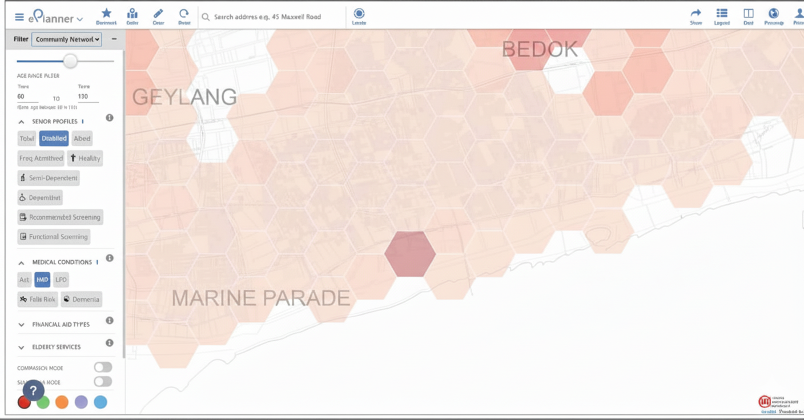
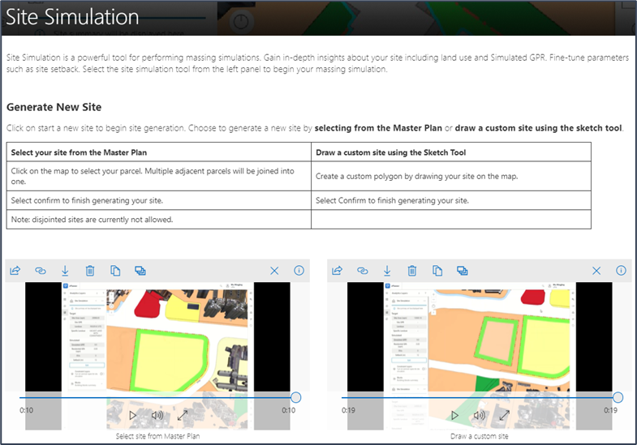
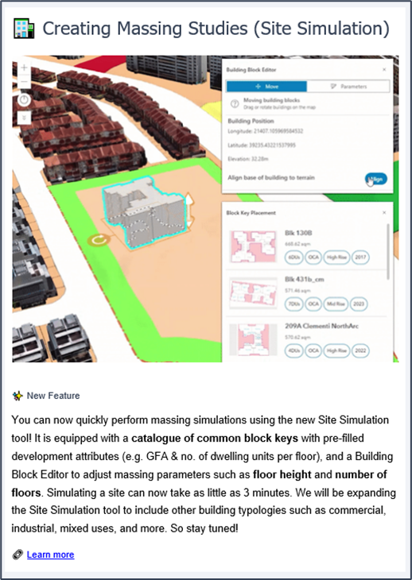
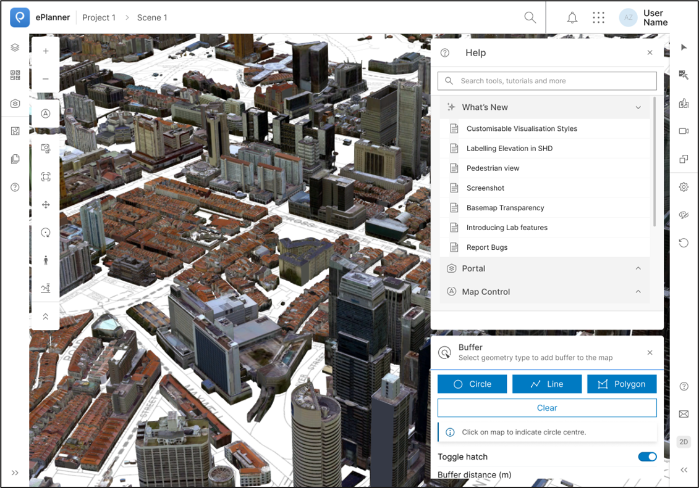
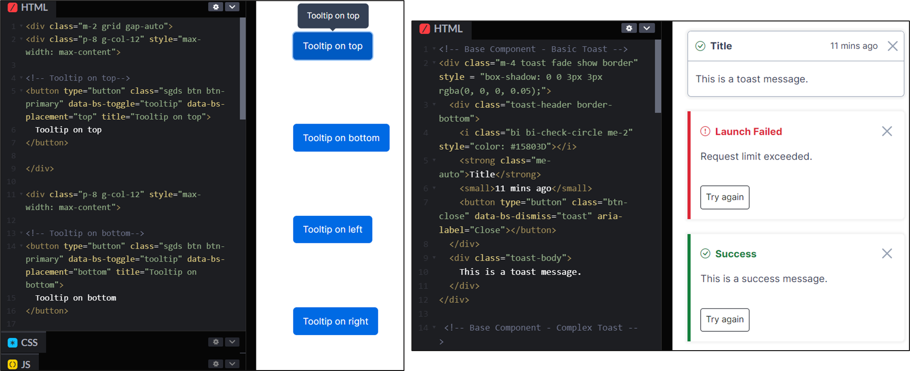
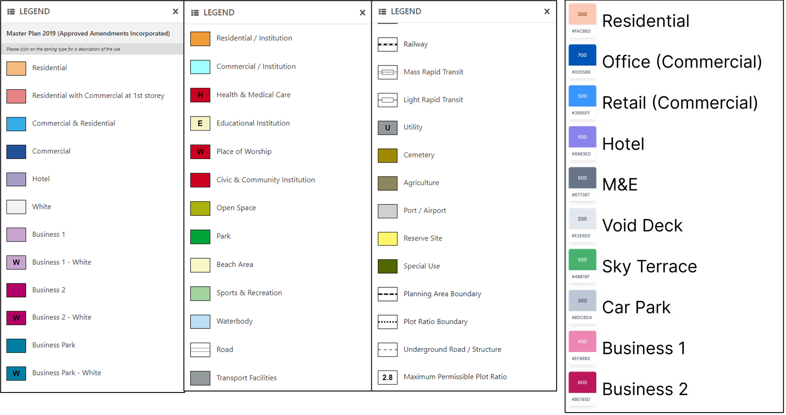

Singapore Urban Redevelopment Authority: Documenting ePlanner 3D
Technical Writing & Audience Research
📊 At a Glance
~80% of non-technical users found onboarding faster and clearer post-update
1,600 users across 40 agencies rely on copy and docs I authored
4 flows shipped to production—floor editor, layer management, help nav, buffer tool
1 component library UDS toasts & tooltips with full written states and usage guidelines
Platform migration SharePoint → Confluence and native in-product UI
🗺️ Context
ePlanner 3D is a dense geospatial platform used by Singapore government planners daily. Density is unavoidable—but inconsistent labels and vague system messages were turning complexity into errors. My role was making language reduce cognitive load without dumbing down a professional tool.
👤 Users
- Architects and urban planners
- Domain experts, not necessarily software-native
- High time pressure, regulatory accuracy requirements
⛓️ Constraints
- ArcGIS Calcite + internal URA Design System (UDS) vocabulary
- Limited screen space
- Copy had to ship within existing component constraints

ePlanner 3D legacy interface📋 Documentation & Rollout—Site Simulation Feature
⚡ Challenge:
Translating 3D simulation concepts for domain experts who approach new software cautiously. Guides had to respect expertise while remaining accessible.
Authored modular workflow guides breaking each task into stages with explicit expected outcomes. Recorded video examples with intuitive step-by-step flows. Advocated for a soft launch: documentation released to power users before full deployment to validate terminology before it reached 1,600 people.

Site Simulation user guide
Soft rollout with internal EDM✅ Outcomes
- Soft launch caught two terminology inconsistencies before general release
- Established a staggered rollout model reused for subsequent features
🤚 In-Product Help Navigation
⚡ Challenge:
Help copy must surface at the exact moment of need. For search to work, item names have to match what users type and not how the system categorises things internally.
Designed the copy architecture for an embedded help library: searchable item naming, What’s New announcement patterns.

New searchable help interface✅ Outcomes
- Self-serve help reduced dependency on ad hoc support
- Search taxonomy became the naming consistency reference across the product
📦 Documentation Migration from SharePoint → Confluence & Native UI
⚡ Challenge:
Migration requires overhaul of content architecture. The same information needs different structure, hierarchy, and tone depending on whether someone is mid-task or planning ahead.
Audited the full SharePoint library and split content into two tracks:
- In-product UI—mid-task only, rewritten as short action-oriented help items matching user search vocabulary
- Confluence—reference and onboarding content, restructured into a hierarchical space with parent/child architecture and labelling taxonomy
✅ Outcomes
- Documentation fully migrated off SharePoint—users never leave the app for help
- Confluence space adopted by the team for ongoing documentation
🎯 Icon Labels and Micro UI Audit
⚡ Challenge:
Icon labels and micro UI are the most constrained UX copy—2–4 words. They need to communicate essential functions without supporting context.
Audited icons and action buttons against their intended function. Rewrote using task-based language and delivered an icon-label mapping doc as a developer handoff artifact.
| ❌ Before | ✅ After |
|---|---|
| Buffer | Create Buffer Zone |
| Floors | Edit Floor Types |
| Error occurred | Floor type could not be saved. Check for overlapping zones. |
| Update successful | Floor cluster updated. Changes saved to active simulation. |
| Layer | Toggle Layer Visibility |
| No items found | No help articles match your search. Try ‘buffer’, ‘floor’, or ‘layer’. |
✅ Outcomes
- Updated labels shipped to production
- Audit framework reused for future additions
💬 UDS Component Writing—Toasts & Tooltips
⚡ Challenge:
System messages must be actionable and consistent across every state. Copy also had to serve a junior planner’s first error and a senior architect’s quick confirmation simultaneously.
Documented reusable toast and tooltip components with full state coverage.

Tooltip component added to in-house design system✅ Outcomes
- Consistent system feedback across the product
- Implementation-ready copy for all states handed off to developers
🌈 Masterplan Colour Legend
⚡ Challenge:
Colour systems need language. The question wasn’t what colour to use—it was whether the label accurately described what the colour encoded, and whether that taxonomy would hold as floor types were added.
Audited legend labels against planning terminology, identified outdated naming, and proposed a new floor type taxonomy mapped to both character limits and domain accuracy.

Before and after naming audit (in progress)✅ Outcomes
- Reduced misinterpretation of floor types in high-density editing
- Naming convention carried forward into the evolving design system
💥 Impact
~80% of non-technical users reported faster, clearer onboarding
Direct result of language decisions: matched user vocabulary, explained causes rather than just notifying outcomes.
Writing shipped to production
Four flows moved from research to implementation—used daily by 1,600 professionals across 40 agencies.
Design system documentation that scales
Copy rationale in component docs means the team extends patterns correctly without tribal knowledge.
👉 What’s Next
- Usability testing on new components: measure completion time and error rates against pre-copy baselines
- Consolidated UDS writing guide: one reference for tone, terminology, and component copy patterns
- Search query interviews: what users type vs. what articles are named is a gap that compounds silently